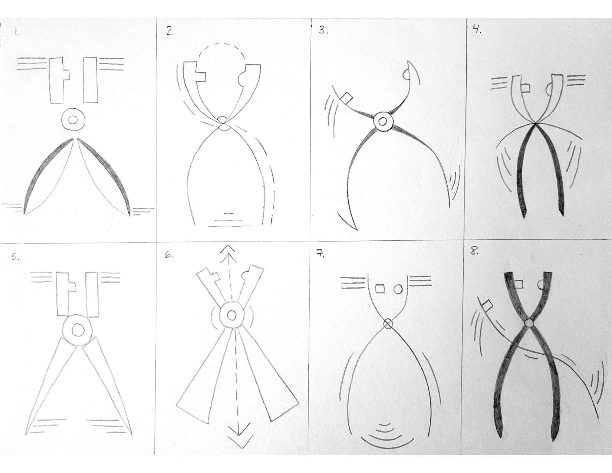
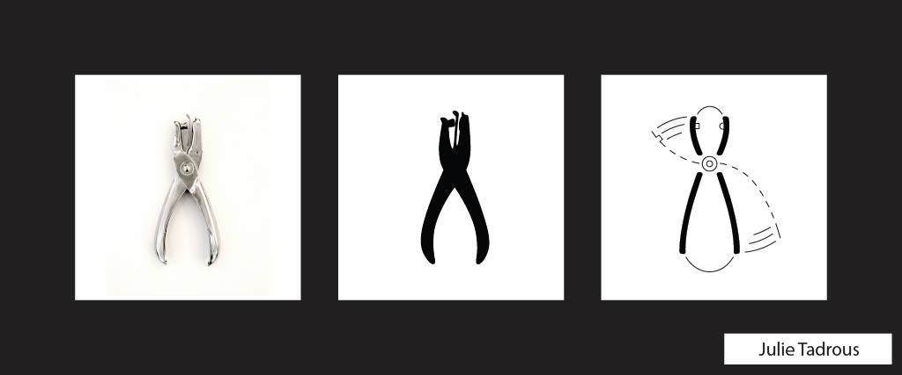
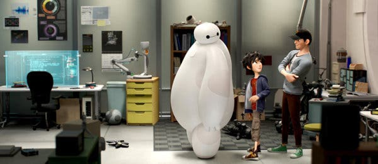
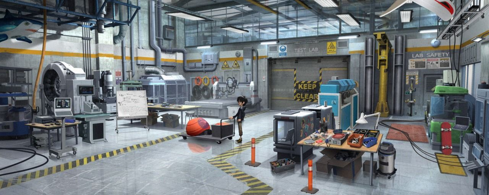
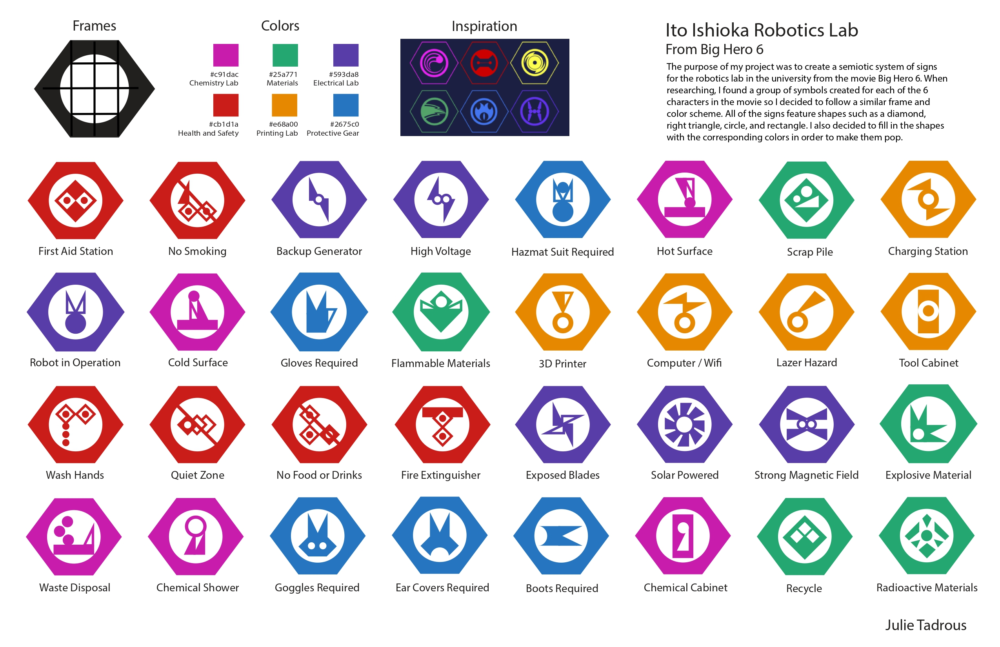
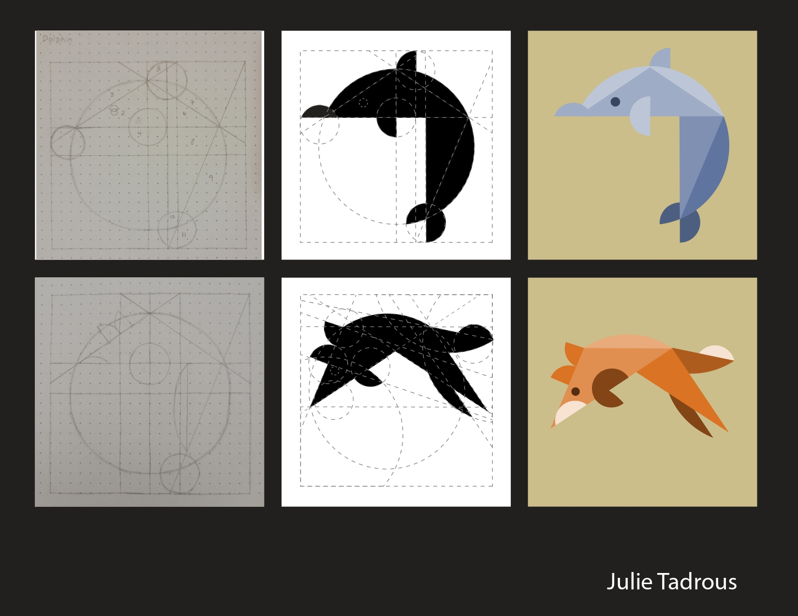
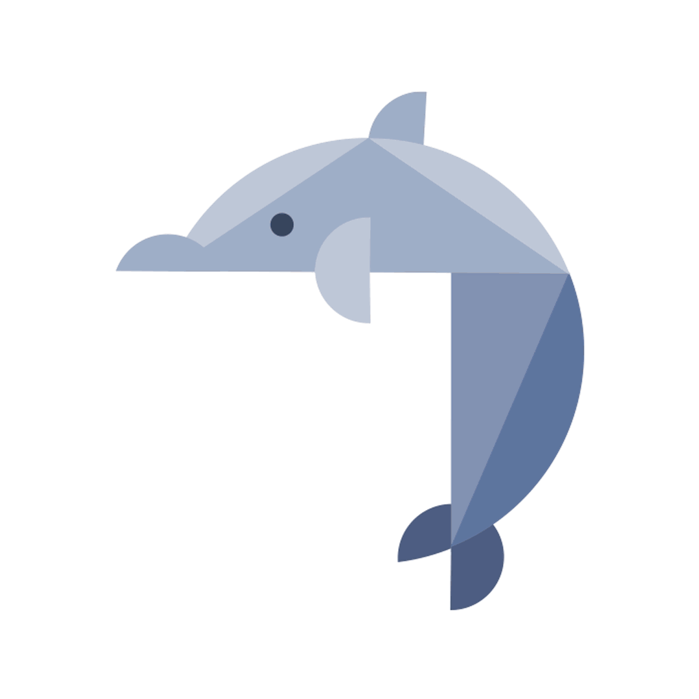

Making Meaning
V201 Making Meaning Coursework, 2021
A collection of projects and designs from the Making Meaning Course in the Herron School of Art. The objective of project 1 was to study the function and movement of an everyday tool and break it down to its simplest form to create a new design. The objective of project 2 was to develop a semiotic standard of signs and symbols that could be used in an existing or fictional facility through research and a study of common shapes and colors. The objective of project 3 was to design abstract images of two animals using simple shapes and colors. Then, create several frames of one animal conforming into the shape of the second animal to develop an animated gif. The objective of project 4 was to pick a movie and design a new poster for that movie through the lense of a completely different genre. All of these projects were created using Adobe Photoshop and Illustrator.
Project 1 - Form Translation
Hole-Puncher Form Sketches
Final Form Translation
Project 2 - Semiotic Standard
Lab from Big Hero 6
Lab from Big Hero 6
Final Semiotic Standard
Project 3 - Animal Abstraction
Final Animal Abstractions
Animal Jump Animation
Project 4 - Genre Shift

Original Disney Maleficent Poster (Fairytale Genre)

Final Poster Redesign (Gangster Genre)